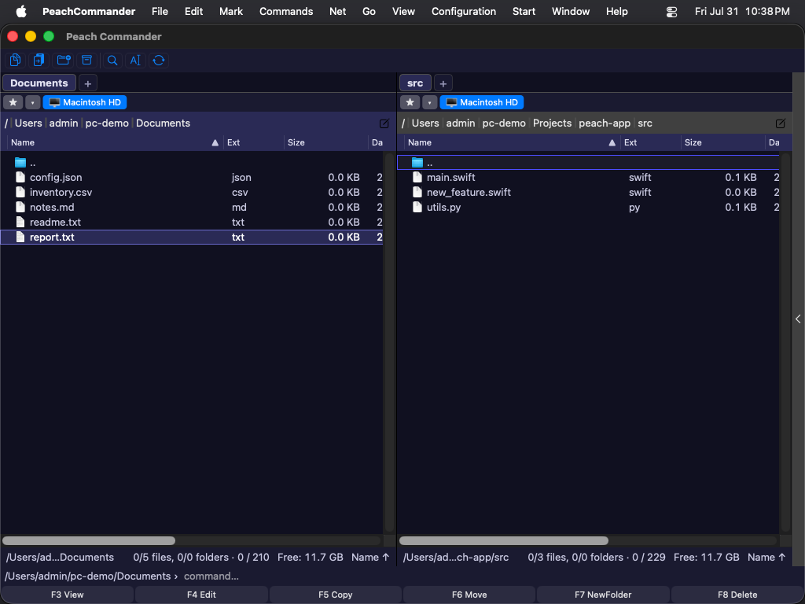

Aspect
Peach Commander se poate potrivi cu aspectul restului Mac-ului dvs. sau poate adopta un stil propriu. Puteți urma setarea de sistem luminoasă sau întunecată (sau forța una), recolora panourile de fișiere, evidenția fișierele după tip și ajusta dimensiunea fontului listei și formatul datei, astfel încât panourile să se citească exact cum vă place.
Alegerea unei teme de culori
O temă înlocuiește întreaga paletă a panourilor într-un singur pas.
- Deschideți fereastra de setări alegând Configurare > Opțiuni…, sau apăsați Cmd+,.
- Selectați pagina Culori.
- Alegeți din meniul Temă: - Sistem (implicit) — fără temă. Panourile urmează setarea Aspect de mai jos, exact ca până acum. Aceasta este valoarea implicită. - Luminoasă / Întunecată — fixează paleta luminoasă sau întunecată încorporată, indiferent de ce face macOS. - Norton Commander — aspectul clasic albastru-cyan al managerului de fișiere DOS original, în culorile CGA autentice: panouri albastre, text cyan, rândul cursorului cyan deschis și galben pentru fișierele marcate.
O temă aduce propria bază deschisă/închisă, astfel încât foile, barele de derulare și controalele standard să se potrivească cu ea — de aceea meniul Aspect este estompat cât timp o temă este selectată. Culorile personalizate ale panourilor (mai jos) au în continuare prioritate față de temă.
 (Figura: paleta Norton Commander — albastrul, cyanul și galbenul CGA originale.)
(Figura: paleta Norton Commander — albastrul, cyanul și galbenul CGA originale.)
Tema Norton Commander folosește valorile CGA autentice ale originalului din 1986: #0000AA albastru, #00AAAA cyan, #55FFFF pentru rândul cursorului, #FFFF55 pentru fișierele marcate. Bara cursorului se inversează în text închis pe cyan, așa cum o desena originalul, iar fișierele marcate își păstrează galbenul.
 (Figura: bara cursorului se inversează; fișierele marcate rămân galbene.)
(Figura: bara cursorului se inversează; fișierele marcate rămân galbene.)
 (Figura: și ferestrele proprii ale aplicației urmează tema.)
(Figura: și ferestrele proprii ale aplicației urmează tema.)
Temele înseamnă doar culori. Dispunerea panourilor, chenarele și fonturile rămân neschimbate — Norton Commander nu readuce chenarele cu linie dublă și nici fontul raster DOS.
Scrieți-vă propria temă
Temele sunt fișiere text simple, câte unul pe temă, într-un dosar themes din interiorul dosarului dumneavoastră de configurare.
- Pe pagina Culori, apăsați Dosarul temelor…. Dosarul este creat dacă nu există, iar prima dată când este gol, Peach Commander pune în el un fișier comentat
example-norton.inicare enumeră toate culorile ce pot fi setate. - Copiați acel fișier, dați-i un nume nou și editați-l. Numele fișierului (fără
.ini) este identificatorul temei; liniaNameeste ceea ce afișează meniul Temă. - Salvați. Deschideți din nou meniul Temă — tema dumneavoastră este în listă. Nu este nevoie de repornire.
O temă minimă are trei linii:
[Theme]
Name = Midnight
Base = dark
[Colors]
ListBackground = #101020
ListText = #C0C0D0

(Figura: o temă încărcată dintr-un fișier din dosarul temelor.)Base alege paleta încorporată (light sau dark) care furnizează fiecare culoare pe care nu o enumerați, așa că scrieți doar ce doriți să schimbați. Culorile sunt #RRGGBB. Liniile care încep cu ; sau # sunt comentarii.
Dacă ceva este greșit în fișier, Peach Commander sare peste acea linie și păstrează restul temei — nu respinge fișierul. Motivul este scris în jurnalul de sistem, vizibil în Consolă dacă filtrați după [theme].
Numele light, dark, norton și system aparțin temelor încorporate; un fișier cu un astfel de nume este ignorat, ca să nu poată ascunde o temă livrată. Dacă ștergeți fișierul temei selectate, Peach Commander revine la Sistem (implicit).
Setați aspectul luminos, întunecat sau de sistem
- Deschideți fereastra de setări alegând Configurare > Opțiuni…, sau apăsați Cmd+,.
- Selectați pagina Culori.
- Din meniul Aspect, alegeți una dintre: - Sistem (urmează macOS) — se potrivește automat cu setarea luminoasă/întunecată curentă a Mac-ului dvs. - Luminos — folosește întotdeauna paleta luminoasă. - Întunecat — folosește întotdeauna paleta întunecată.
 (Figura: pagina Culori: alegeți un aspect și suprascrieți culorile individuale ale panourilor.)
(Figura: pagina Culori: alegeți un aspect și suprascrieți culorile individuale ale panourilor.)
Personalizați culorile panourilor
Pe aceeași pagină Culori, sub Culori personalizate ale panourilor, activați caseta de lângă orice element și alegeți o culoare din fântâna de lângă:
- Text — numele fișierelor și folderelor.
- Fundal — fundalul panoului.
- Text selectat — culoarea folosită pentru fișierele marcate.
- Cadrul cursorului — conturul din jurul elementului curent.
Lăsați o casetă dezactivată pentru a păstra culoarea încorporată pentru acel element. Faceți clic pe Resetează la valorile implicite pentru a șterge toate suprascrierile deodată.
Colorați fișierele după tip
- Deschideți Configurare > Opțiuni… și selectați pagina Afișare.
- Faceți clic pe Culori după tip de fișier….
- Adăugați o regulă cu o mască de nume precum
*.zipsau*.txt, apoi alegeți o culoare pentru fișierele care se potrivesc. - Folosiți Adaugă regulă pentru mai multe măști; faceți clic pe Gata pentru a salva sau Anulează pentru a renunța.
Fișierele care se potrivesc apar apoi în culoarea aleasă în ambele panouri.
Ajustați dimensiunea fontului și formatul datei
Pe pagina Afișare puteți de asemenea:
- Alege dimensiunea fontului listei panourilor în puncte.
- Introduce un tipar de format al datei pentru a controla cum sunt afișate datele de modificare; lăsați gol pentru a folosi formatul regional al Mac-ului dvs. O previzualizare live apare sub câmp pe măsură ce tastați.
- Activa Fundal alternant al rândurilor pentru dungi de tip zebră care ușurează parcurgerea listelor lungi.
Comenzi rapide
| Acțiune | Comandă rapidă |
|---|---|
| Deschide setările | Cmd+, |
Note
- Meniul Aspect are efect doar cât timp tema este Sistem (implicit); o temă își stabilește propria bază.
- O temă colorează și ferestrele proprii ale aplicației. Ferestrele de sistem — Deschide, Salvează, selectoarele de culoare și font și alertele — își păstrează aspectul standard, la fel ca ferestrele deschise chiar de module.
- Setarea de aspect stilizează panourile de fișiere. Dialogurile de sistem, alertele și controalele standard urmează întotdeauna macOS.
- Vizualizatorul de fișiere încorporat folosește palete de evidențiere a sintaxei luminoase și întunecate care se potrivesc, astfel încât codul evidențiat rămâne lizibil în ambele aspecte.
- Culorile personalizate și regulile după tip de fișier sunt salvate cu setările dvs. și reaplicate de fiecare dată când deschideți aplicația.